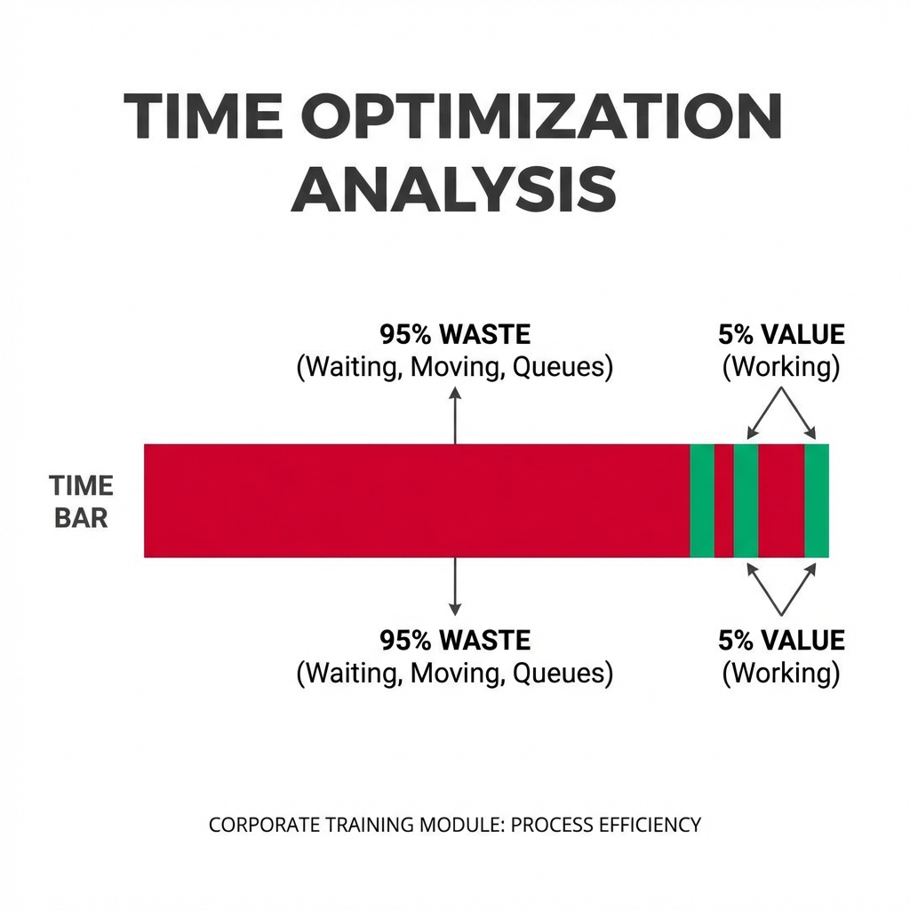
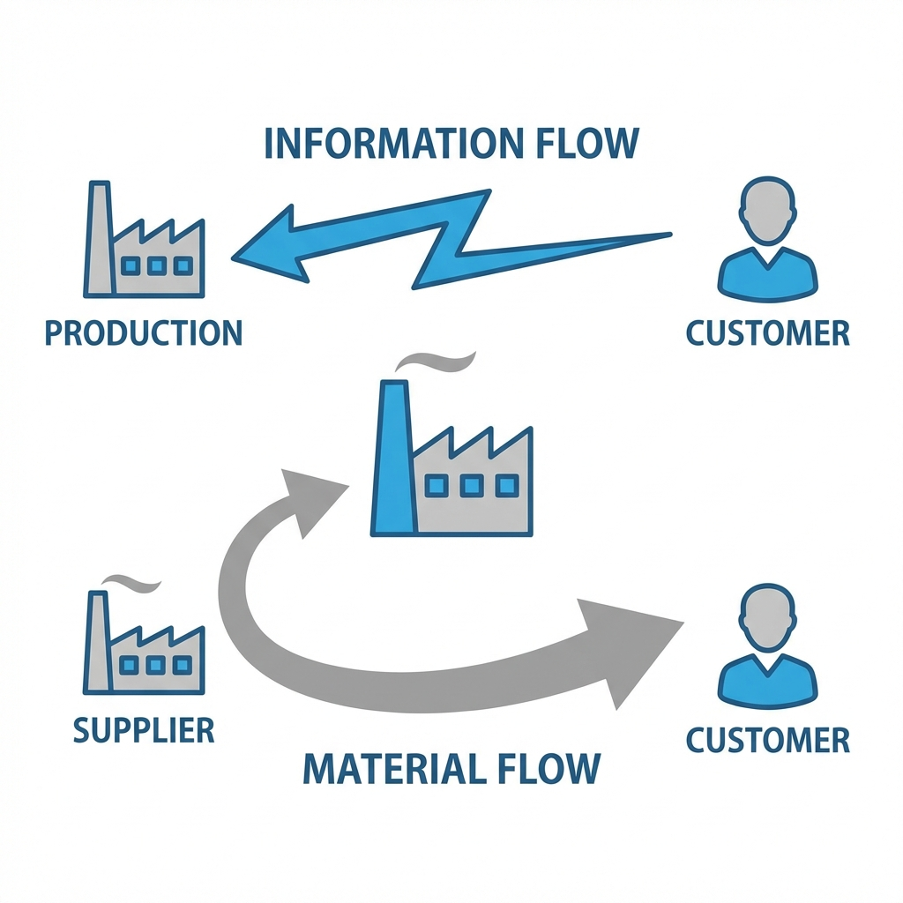
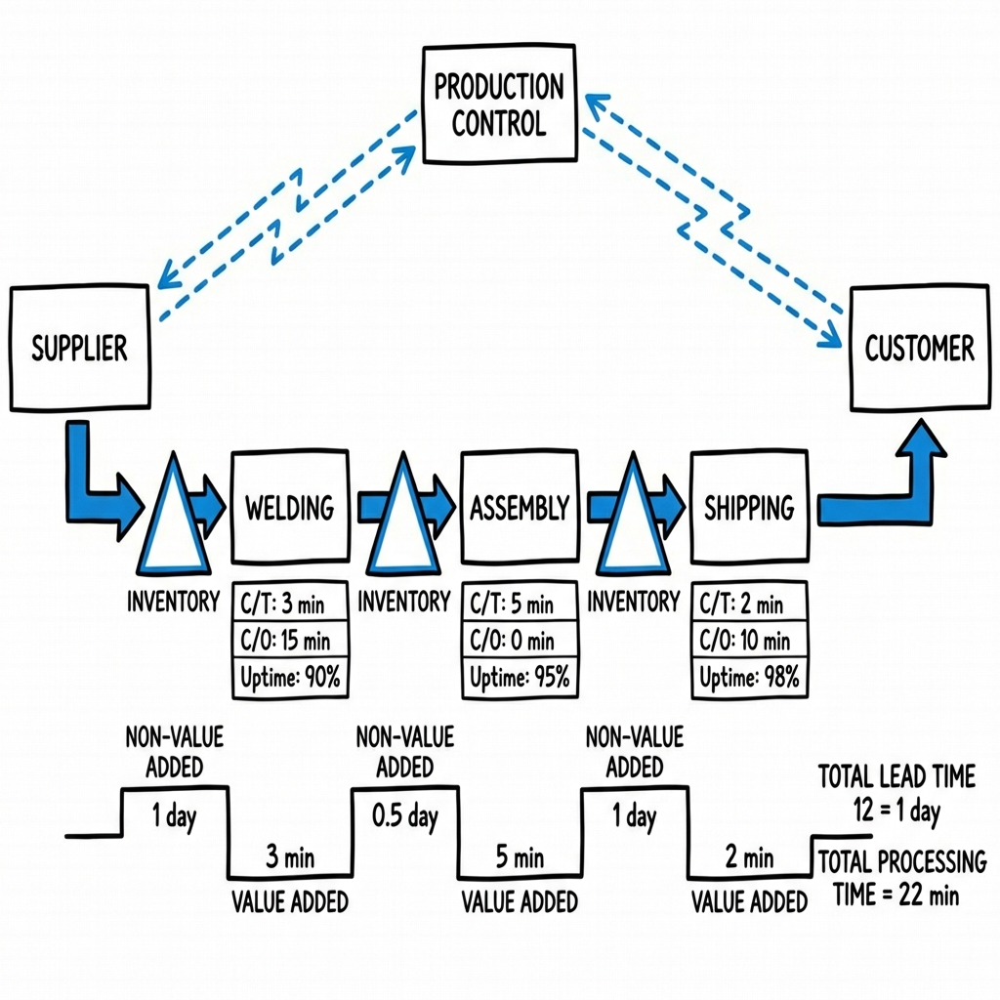

Vetted Safe | Continuous Improvement Series
"To see how work actually flows, identify the 95% of time that is 'Waste', and design a Future State that flows."

Most lead time is spent waiting, not working.


Map the mess. See the truth.